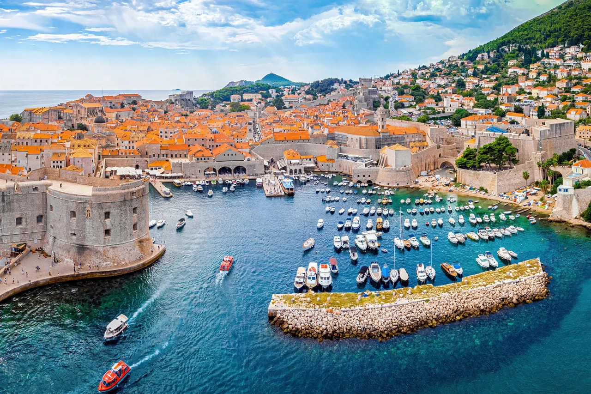

[Image placeholder: The old town of Dubrovnik on the eastern Adriatic coast]The **Adriatic Sea** is a body of water separating the Italian Peninsula from the Balkan Peninsula. It is the northernmost arm of the Mediterranean Sea, extending from the Strait of Otranto (where it connects to the Ionian Sea) to the northwest and the Po Valley. The sea's coasts are shared by Italy, Slovenia, Croatia, Bosnia and Herzegovina, Montenegro and Albania.
The Adriatic is known for the more than 1,300 islands along its eastern (Croatian) coast, for historic ports such as Venice, Trieste, Split and Dubrovnik, and for the shallow northern basin around the Po delta. Its name derives from the Etruscan colony of Adria.
The sea is about 800 km long and on average some 160 km wide; the southern basin reaches depths over 1,200 m, while the north is shallow. Seasonal winds include the cold bora from the northeast and the warm sirocco from the southeast.
The Adriatic was a contested frontier between Rome and Illyrian pirates, later between Venice, the Ottomans and the Habsburgs; the Venetian Republic dominated its trade for centuries. Today its coasts are among Europe's most popular tourist regions, and the sea supports important fisheries and ferry routes between Italy and the Balkans. Pollution and overfishing in the enclosed northern basin are persistent concerns.